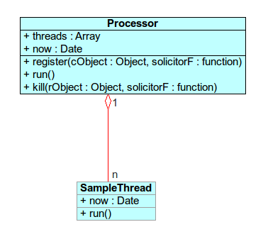

lluvia Project lesson
lluvia load log
Cómo Se Procesa Un Hilo
El entorno de lluvia tiene una variable processor
inicializada a null. Si queremos habilitar el multiproceso hay que referenciar un new Processor por esta variable general. La variable processor maneja una lista de hilos. Los hilos serán registrados en processor mediante el método register, propio de la clase Processor, y serán albergados en un array de objetos llamado threads. processor irá ejecutando las funciones propias de cada uno de los hilos contenidos una vez se llame a su método run y lo seguirá haciendo, a partir de ahí, cada n milisegundos de manera automática. Este método llamará a los métodos run contenidos en los hilos almacenados en el array consecutivamente.
También podemos eliminar hilos contenidos en el array threads de processor llamando a su método kill.
Veámos un ejemplo por pasos:
-
Creamos un objeto (my_thread), de la clase SampleThread, con dos atributos y un método run.
-
Instanciamos la variable processor (processor = new Proccesor).
-
Llamamos al método processor.register pasando como párametros el hilo creado (my_thread) y el puntero al método run del hilo creado (my_thread.run).
- Ejecutamos el método run de processor.
my_thread = new SampleThread()
processor = new Processor()
processor.register(my_thread, my_thread.run)
processor.run()
INPUT TERMINAL
Your code:
function SampleThread(){
this.output = document.getElementById("debug")
this.now = new Date()
}
SampleThread.prototype.run = function(){
this.now = new Date()
this.output.innerHTML = this.now.toString()
}
my_thread = new SampleThread()
processor = new Processor()
processor.register(my_thread, my_thread.run)
processor.run()
run
if(processor)
processor.kill(my_thread, my_thread.run)
stop
OUTPUT CONSOLE
#debugConclusión
El atributo now del objeto my_thread obtiene al crearse el valor de la fecha y hora actual del sistema. Internamente, después de albergarse my_thread en el array threads del objeto processor, y ejecutarse el método run de processor, este llamará al método run del objeto my_thread almacenado. El método run de my_threads obtiene denuevo el valor de la fecha y hora del sistema y lo muestra por pantalla. Pasado un intervalo de tiempo de n milisegundos, el método run de processor es llamado automáticamente, de manera que, al llamar este a su vez al método run de my_thread, el atributo now de my_thread obtiene otra vez el valor de la fecha y hora actual mostrándolo por pantalla. Pasado otra vez este intervalo de tiempo se repetirá este proceso. Así observamos como la hora que puede verse en la ventana OUTPUT CONSOLE varía automáticamente con el paso de los segundos.
Si llamamos al método processor.kill y le pasamos como parámetros el objeto my_thread y el puntero al método run de este, eliminaremos la ejecución de ese proceso, ya que, internamente, eliminamos el objeto my_thread del array threads de processor. Es lo que ocurre cuando pulsamos el botón stop situado debajo del ejemplo.
Diagrama

Tenemos una clase Processor con dos atributos (threads y now) y tres métodos (register, run y kill).
El atributo threads del tipo array contendrá cada uno de los hilos que se creen y que se registren en processor para su posterior procesamiento.
El atributo now contendrá la fecha y hora actual del sistema.
El método register registra cada hilo empujándolo al array threads a través de un método push interno. Se le envía como parámetros el objeto del tipo hilo creado y el puntero a su método run.
El método run ejecuta los métodos run de cada uno de los hilos almacenados en su array threads. El método run se llamará así mismo cada n milisegundos de manera automática a partir de que lo llamemos por primera vez, repitiendo las sucesivas llamadas a los métodos de sus hilos contenidos.
El método kill elimina uno de los hilos almacenados en el array del objetos threads, de esta forma, en caso de que se estuviera ejecutando un hilo, dejaría de hacerlo. Recibe como parámetros el nombre del hilo que se quiera detener y el puntero al método a detener.
La clase SampleThread se ha utilizado para el ejemplo. Usando lluvia podremos crear objetos del tipo Thread con métodos run que ejecutaran diferentes tareas al gusto (como hemos visto, estos run se ejecutarán desde el run de processor). Los atributos derivarán del tipo de tareas que vayan a realizar los hilos creados.